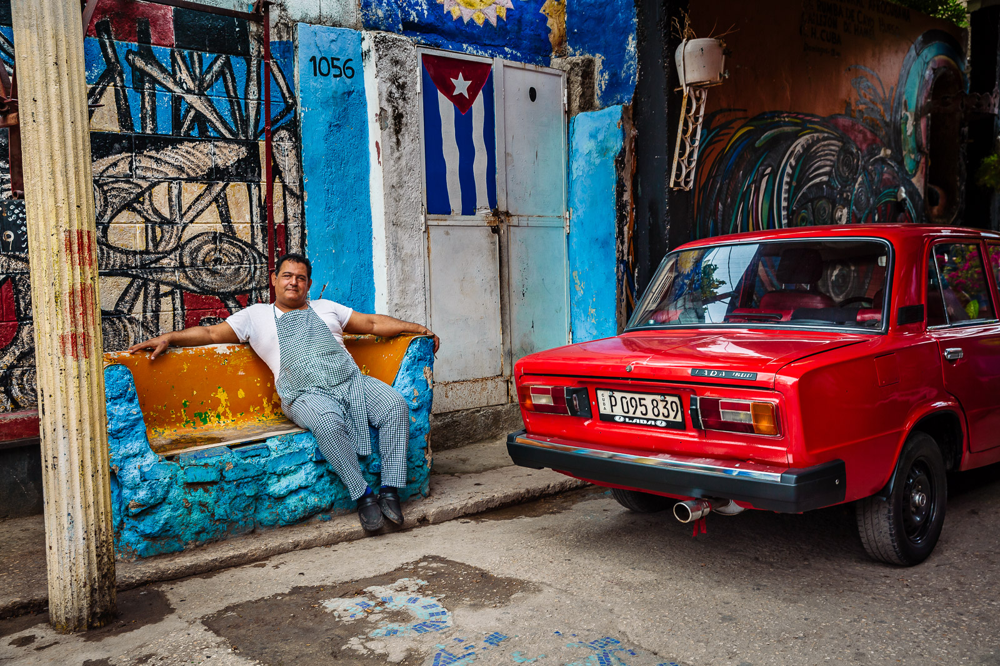
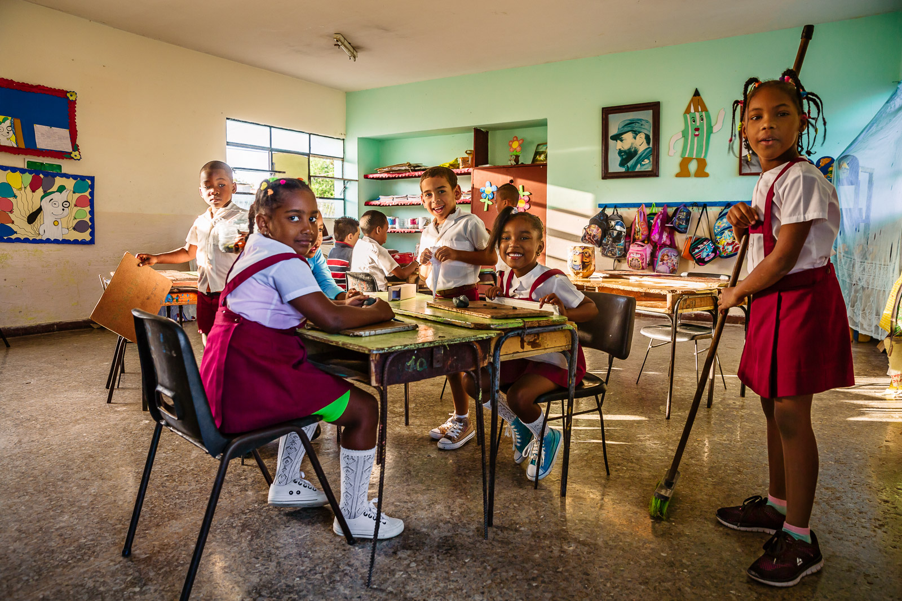
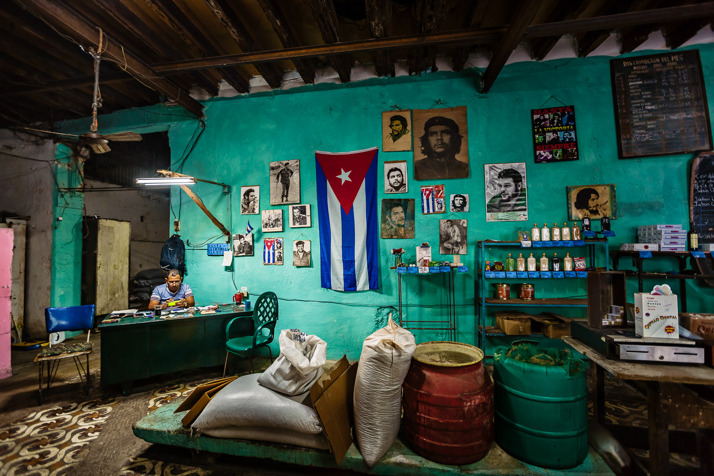

Llamas are domesticated animals that have been around humans for numerous centuries. They originated from South America together with the Nazca culture in around 200BC, but are more closely tied with the later Inca civilisation. And after all this time spent in South America, llamas are slowly conquering the world with their strength and gentle […]

Take it easy Most of us live a fast-paced life, juggling many things such as work, family, and friends. As we grow older, it seems as though it becomes increasingly difficult for us to take a step back and enjoy a peaceful moment of contemplation. In Cuba, people are still capable of leading an […]

School life in Cuba Primary schools all around the world represent the budding society of the country’s future. It is often very difficult to gain access to these places, especially in a country such as Cuba that is still very apprehensive of the Western world. Despite this, I was given special permission to spend […]

Cabrios are a girl’s best friend Classic cars such as the colourful convertible Cabriole are synonymous with the vibrant society of Cuba. This passion for cars in the Cuban community starts from a very young age, and the joy in children’s faces is easy to see. I have a deep passion to capture children from […]


The Bodega Far away from the modernity and commercialism that is sweeping over central Havana, the life of Cubans living in the periphery of the capital city is far from ideal. Food is hard to come by, with the vast majority of the population using their government issued ration booked to acquire food from controlled […]

Family Photography is not solely a reflection of an image captured in time. Most importantly, if not crucial to the situation, is being accepted completely as a part of the space being shot. This bond is a determining factor to the success of an image, where a special relationship is formed between the persons in […]

The Young Mason Mandalay holds the title of the second largest city in Myanmar, as well as the last royal capital of the country when the Konbaung Dynasty ended towards the end of the 19th Century. In addition, this vibrant city is also considered to be the Buddhism capital of the world, making it a […]

The Policeman Security still remains a top priority for almost every nation in the world, and so it is still forbidden to photograph certain areas such as airports and military bases. While some countries do allow for strangers to take pictures of on-duty army or police personnel, it is heavily frowned upon in others. Myanmar […]
Joie de Vivre Children have an enormous power to teach us about the basic things that adults often find challenging in their lives. And this scene captures the essence of this – happiness is not something that is related to income or standard of living, but comes from purely within. Baseco is one of the […]